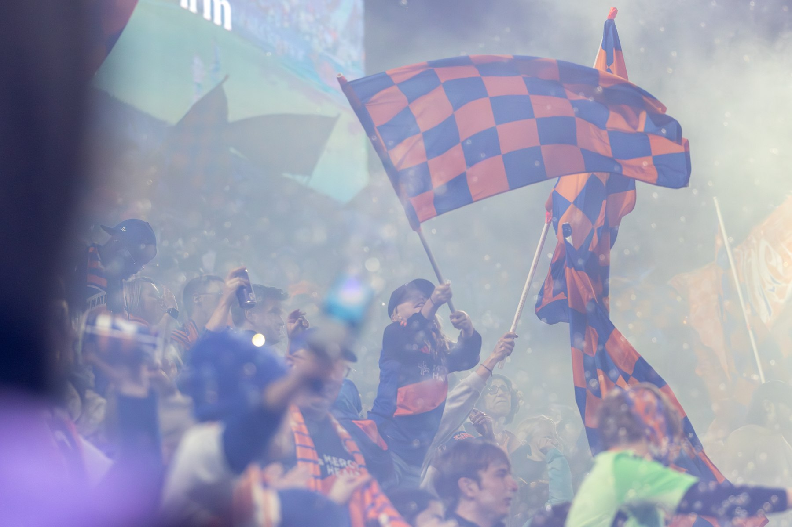

场边 / TOUCHLINE A FOOTBALL PHOTO JOURNAL
目光所至，
热爱所在。
追逐足球，记录体育。
关于交锋、呐喊，
和那些超越比分的瞬间。
01 — SELECTED WORK
在场，见证。
比赛的强度，看台的温度。
用照片，留下自己的答案。
08 FRAMES
近期视角，精选瞬间。
精选 8 张 · 以 FCC 04.18 为主每一帧，都因为热爱。END OF SELECTION ↗

MORE THAN A GAME.02 — BEHIND THE LENS
球场很大，
故事很近。
我是 AaronPe1，一名热爱足球的体育摄影者。
我的目光追随球场上的交锋，也停留在看台与边线之间。用摄影记录体育，留下那些转瞬即逝、却值得反复回看的画面。
AaronPe1 体育摄影 / 足球
03 — GET IN TOUCH
下一场，
场边见。
拍摄邀约、项目合作，或聊聊足球。
aaron_pe1@outlook.com ↗